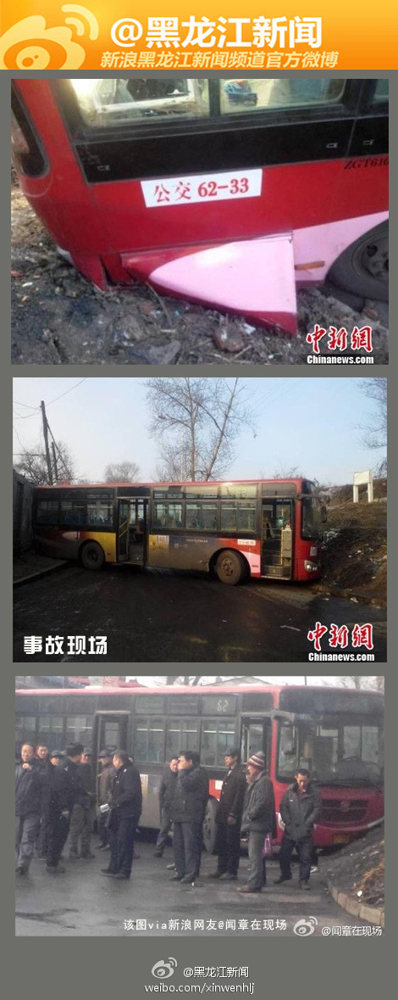

早晨，我像往常一样走通郊南路上班，刚走到一半，就看见有很多车从对向车道开过来了，平时都没有这么多车的，肯定有肇事，果断调头从别的路走，因为绕路，我迟到了十多分钟，到公司以后我还在想，点儿怎么那么背，还在暗骂肇事司机什么技术，跟不幸罹难的人相比，我迟到了十多分钟又算的了什么。。。
@a_2484951175:
【 哈尔滨62路公交车发生侧滑 事故致1死3伤】27日7时许，哈尔滨市香坊区62路公交车站点一公交车发生侧滑，撞到站点等车的乘客。随后伤者被送往医院救治。9时30分许，经抢救无效死亡。另外还有三名伤者正在医院救治。这是要闹哪样
哈尔滨62路公交车发生侧滑 事故致1死3伤】27日7时许，哈尔滨市香坊区62路公交车站点一公交车发生侧滑，撞到站点等车的乘客。随后伤者被送往医院救治。9时30分许，经抢救无效死亡。另外还有三名伤者正在医院救治。这是要闹哪样
 网页链接
网页链接
- 